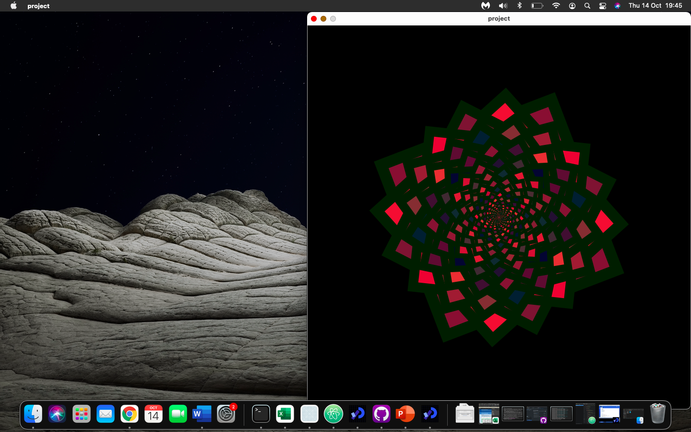
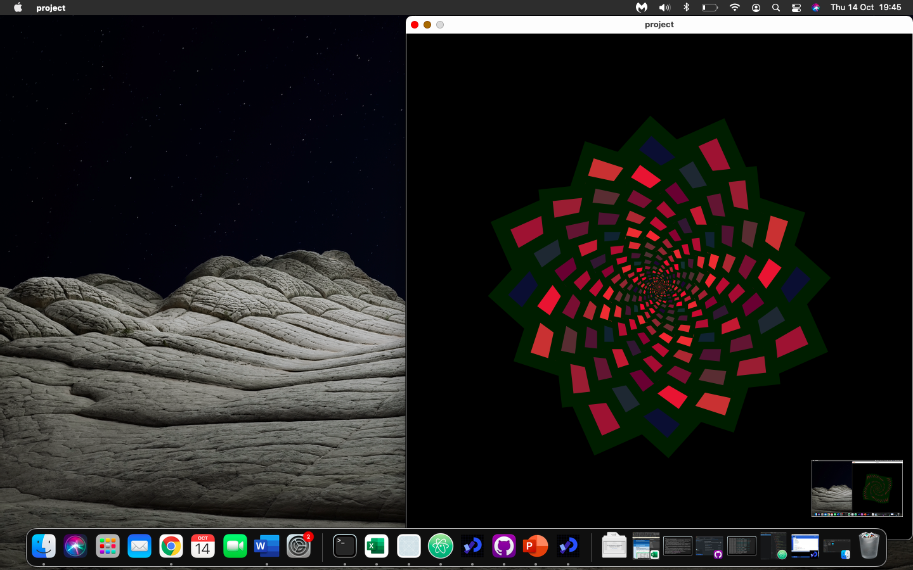
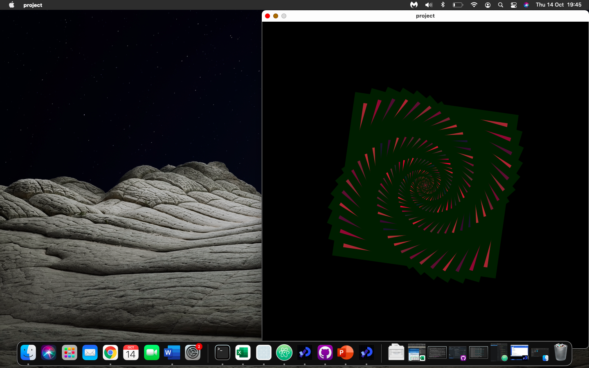
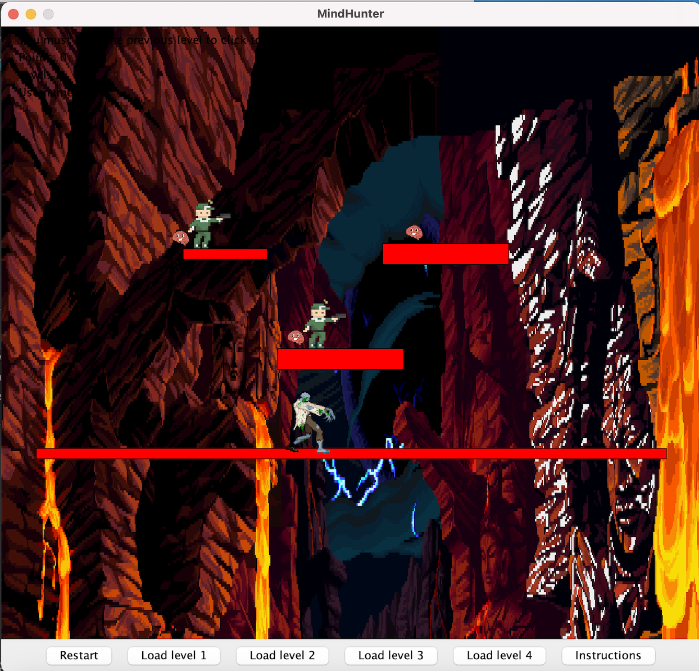
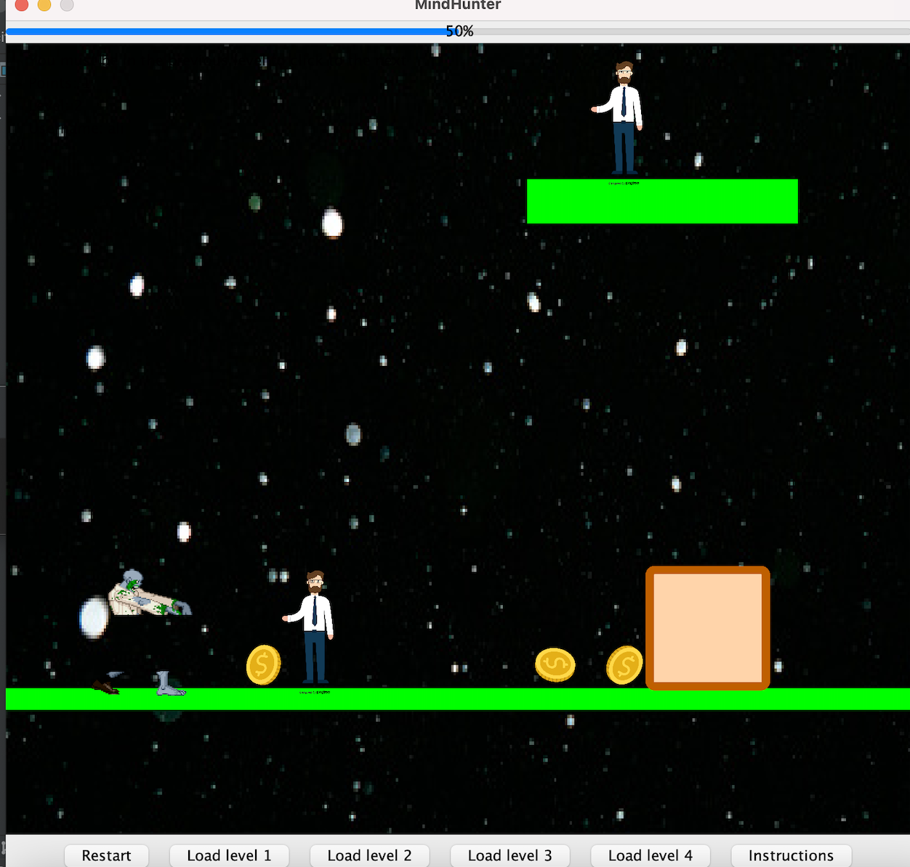
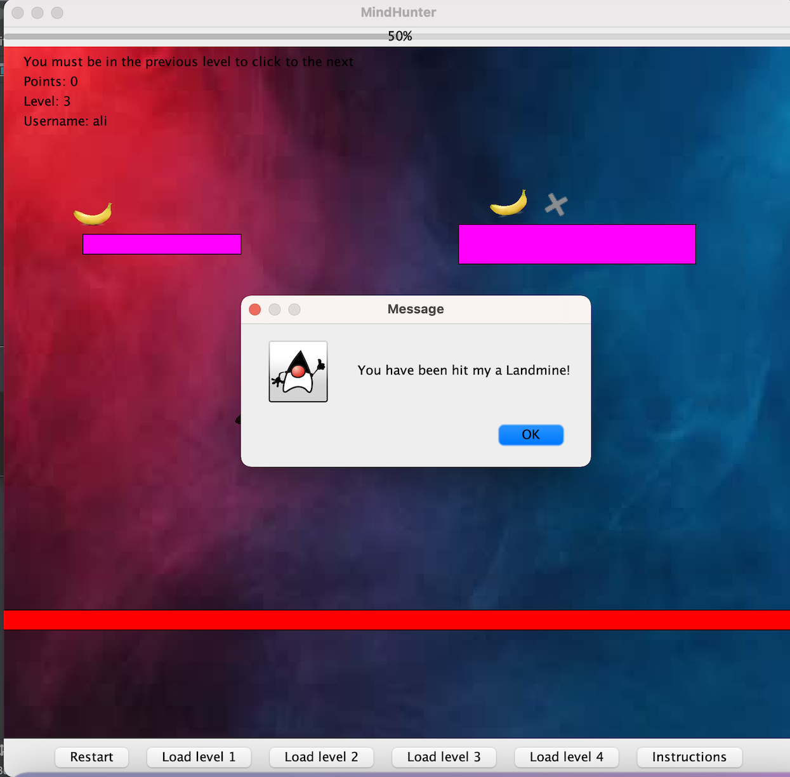
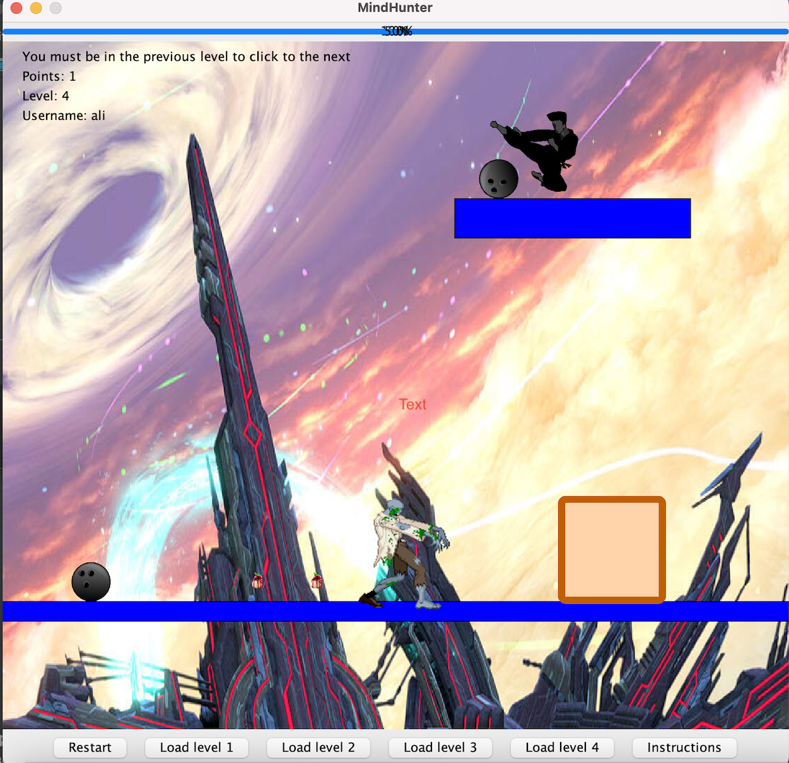

Ali SiddiqueI am relatively new to programming, but have learnt javascript over the past few months. Javascript is most used to add functionality to the website such as the navigation bar. I am currently learning python to use its frameworks to make a web application |
||
|
|
||
Bootcamp 2021: Rose blossomingMy first programming project, concluding the 2 week Programming Bootcamp at City (2021). This Processing project demonstrates a comprehensive understanding of the use of loops and functions. I used the translate and rotate function to rotate the rectangles in the centre of the screen. The outline of the rectangles was increased to replate the shadows in roses. The rotation was continuous, but the rectangles would collapse on itself after 10 interations. Check out the code on Github: Code | ||
|    |
| |
Java GameThe Java game was built using a physics enginer provided to me by the univeristy. The game implements fundamental computer science concepts such as encapsulation, overloading and GUIs. The game involves 4 levels, containing different scenaries and villains. Additionally, the game contains GUI elements which are made using java swing. This game has greatly improved my java understanding and was an incredible project to work on. Some challendes I faced when making this project was implementing encapsulation as the fields we used in the classes were not accessible to other classes, to solve this I used getters which allowed me to access variables from other classes in the respective class. Furthermore, I found accessing methods in other classes to be quite difficult, but I found using the classes in the constructor allowed me access to all the methods in the respective class.Finally, learning the GUI was difficult because I had never encountered using native GUI's in a project, but the GUI desginer helped tremendously. Check out the code on Github: Code | ||
|     | ||